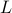
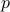

Zhaoyang Shi (石兆阳)
Research
I am broadly interested in the following topics:
Geometric and topological statistics, TDA
Machine learning
Random graph
Kernel method and RKHS space
Stein's method
Projects
Dimension Reduction via TDA (topological data analysis)
Persistent homology techniques like persistence diagrams (PDs) have been commonly considered in many statistical learning algorithms including clustering, classification, dimension reduction, etc. A  -th persistence diagram is a set of points , where each point records the “birth” and “death” time for each -dimensional homology class (-dimensional hole) with being its life (persistence), e.g., points as 0 dim, lines as 1 dim, triangles as 2 dim, etc.
-th persistence diagram is a set of points , where each point records the “birth” and “death” time for each -dimensional homology class (-dimensional hole) with being its life (persistence), e.g., points as 0 dim, lines as 1 dim, triangles as 2 dim, etc.
The left figures consists of a sample on a circle with Gaussian noise while the right figure shows its persistence diagram. One connected component (the black dot) and one hole (the red triangle) are significant. The points near diagonal are “insignificant noises” corresponding to the sampling distribution. |
The idea was proposed in Persistent Homology-based Projection Pursuit, where the dimension reduction from a cylinder to 2D is by minimizing the Wasserstein distance between persistence diagrams between the original data X and its linear projected data (preserving topological features): I haven been working on its implementation including adding noises, multiple cylinders with different angles, sizes and some more complicated structures, see my codes for more details. Also, I am more interested in the theoretical analysis which is missing in the original paper. This part involves concentration inequality and stability of the persistence diagrams, convergence of the optimal transport, etc. |
The left figure shows an example of 2 cylinders with different sizes and angles in 3D. The middle one is the projected data onto 2D. The right picture presents the persistence diagrams of the original data (blue) and the projected data (red). |
Normal Approximation of Stabilizing Statistics via Stein's Method
My focus of Stein's method is on deriving the normal approximation rate of the so-called stabilizing statistics via some metric including the Kolmogorov metric, the Wasserstein distance, etc, where the empirical process below verifies CLT with the rate given by the Berry-Esseen theorem:
where are i.i.d. with some moment conditions.
One of the most significant problems with the classical Berry-Esseen theorem is it requires i.i.d. score functions (). Also, classical statistical models usually assume i.i.d. data from (say) sub-Gaussian density however Stein's method would allow more general families of densities like log-concave, etc. Furthermore, sometimes the statistics are not or hard to be expressed into sums of scores. From dependent scores to independent scores and from sums of scores to the general statistics, a technique called Stabilization gains more and more interest.
Let  be a point process and the key idea behind stabilization is to assume the cost function (not necessarily as sums):
be a point process and the key idea behind stabilization is to assume the cost function (not necessarily as sums):
won't change its value when adding points outside some region around  (typically a ball when we call the radius as the radius of stabilization). Some other variants include assume the score functions won't change values. The motivation behind it is
(typically a ball when we call the radius as the radius of stabilization). Some other variants include assume the score functions won't change values. The motivation behind it is
introducing local dependence between score functions or the statistic itself.
controlling the “size” of local dependence, i.e., the tail probability of the radius of stabilization contributes to the rates of normal approximation.
combining with some moment conditions.
Many statistics (especially graph-based ones) lie in this category like geometric statistics including -nearest neighbor graphs statistics, minimum spanning trees statistics and topological statistics including Euler characteristics and Betti numbers, etc. Moreover, its connection with many other estimators like random forest, kernel regression estimators, entropy estimators, etc. shows its strong potentials in statistical field for statistical inferences.
This resulting rate of normal approximation usually recovers the classical Berry-Esseen one's. I have been working with several particular types of the family of stabilization notions, see A Flexible Approach for Normal Approximation of Geometric and Topological Statistics.
Normal Approximation of -PNN Estimators and Random Forest
Since its introduction, random forest has shown its great power on machine learning and many other fields while a great many of variants of random forest have been proposed for many purposes. Among them, a type that is closely connected to the so-call -potential nearest neighbor (-PNN) was studied in Random Forests and Adaptive Nearest Neighbors and later on On the Layered Nearest Neighbour Estimate, the Bagged Nearest Neighbour Estimate and the Random Forest Method in Regression and Classification:
for a regression model: , where are weights with sum 1. They pointed out that only -PNNs can have nonzero weights thus this type of random forest (non-adaptive) can be viewed as a weighted sum of responses of -PNNs. Here, -PNN is a generalization of classical -NNs.
In the paper, we showed that actually, this local property ( can only be nonzero for -PNNs) verifies the region of stabilization, which is a generalization of radius of stabilization. A multivariate normal approximation rate measured by the Kolmogorov metric has been proven along with a smooth Bootstrap application for statistical inferences. Furthermore, this region-based stabilization procedure will demonstrate a strong potential on showing normal approximation of many statistics including kernel regression estimators, entropy estimators, etc. This is the first result on the rates of (multivariate) normal approximation of random forest while allowing grows as  grows.
grows.
Weighted Graph Laplacians and Fractional Laplacians
Graphs Laplacians serve as an important tool in identifying geometric structure in data. Their eigenvalues and eigenvectors, in particular, play a central role in many unsupervised and semi-supervised learning algorithms. When properly scaled, the (unnormalized) graph Laplacian  will converge to the following (weighted) Laplace–Beltrami operator:
where  is the density. While there are already any existing literatures focusing on it and its variants including normalized Laplacian, random walk Laplacian, recently, I am more interested in a more general family: the weighted Laplacian: for a parameter and ,
and for , where I focus a family of normalization that cover many commonly used Laplacians proposed in Spectral Analysis of Weighted Laplacians Arising in Data Clustering.
One of the problems of statistical interest we have considered in our work Adaptive and Non-adaptive Minimax Rates for Weighted Laplacian-eigenmap Based Nonparametric Regression is to apply the weighted Laplacian to a standard nonparametric regression problem (Gaussian i.i.d. noise)
via eigenmaps algorithm as well as deriving its non-adaptive and adaptive minimax optimal rates when the true regression function is assumed to lie in Sobolev spaces, i.e., achieving rate with  as the smoothness and
as the smoothness and  as the dimension. We generalizes Minimax Optimal Regression over Sobolev Spaces via Laplacian Eigenmaps on Neighbourhood Graphs, which only considered the unnormalized Laplacian as a special case of the weighted Laplacian and also obtains an adaptive estimation via Lepski's method achieving minimax optimal rates up to a logarithmic factor. This adaption does not require the knowledge of either the smoothness or the norm parameters of Sobolev spaces and its the first of its kind. Besides, our proof arguments could rigorously prove the idea roughly outlined by Spectral Analysis of Weighted Laplacians Arising in Data Clustering on showing the convergence of the discrete weighted graph Laplacian matrices to their continuum counterparts in terms of eigenvalue convergence and eigenvector convergence.
as the dimension. We generalizes Minimax Optimal Regression over Sobolev Spaces via Laplacian Eigenmaps on Neighbourhood Graphs, which only considered the unnormalized Laplacian as a special case of the weighted Laplacian and also obtains an adaptive estimation via Lepski's method achieving minimax optimal rates up to a logarithmic factor. This adaption does not require the knowledge of either the smoothness or the norm parameters of Sobolev spaces and its the first of its kind. Besides, our proof arguments could rigorously prove the idea roughly outlined by Spectral Analysis of Weighted Laplacians Arising in Data Clustering on showing the convergence of the discrete weighted graph Laplacian matrices to their continuum counterparts in terms of eigenvalue convergence and eigenvector convergence.